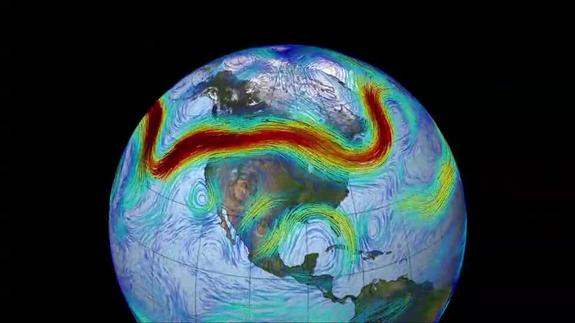

동기 유발
같은 거리인데 비행시간이 다르다?
교과서 p. 108학습 목표
- 행성파의 발달 과정을 설명할 수 있다.
- 지상 고·저기압 발달에서 편서풍 파동의 역할을 평가할 수 있다.

NASA Goddard Space Flight Center, 퍼블릭 도메인
미국에서 우리나라로 올 때가 우리나라에서 미국으로 갈 때보다 비행시간이 더 길다. 같은 거리인데 왜 그럴까?
예시: 중위도 상공에는 서쪽에서 동쪽으로 강한 편서풍이 불어, 동쪽으로 갈 때는 뒷바람, 서쪽으로 올 때는 맞바람을 받기 때문입니다. 교과서 운영안은 5차시(대기 대순환·편서풍 파동 2차시 / 행성파 탐구 / 변동 과정과 날씨 / 일기도 탐구)입니다.
핵심 개념 1
대기 대순환
교과서 p. 108 ~ 109위도별 에너지 불균형에서 대순환으로
- 태양 상수: 대기권 꼭대기에서 햇빛에 수직인 단위 면적이 단위 시간에 받는 태양 복사 에너지 ≈ 1367 W/m². 지구 표면 전체에 대한 평균은 그 1/4인 약 342 W/m²이다.
- 지구 전체는 복사 평형이지만, 저위도는 에너지 과잉, 고위도는 에너지 부족이다. 따뜻한 공기가 고위도로, 찬 공기가 저위도로 움직이며 불균형을 줄이는 것이 대기 대순환의 원인이다.
- 단일 세포 순환: 지구가 자전하지 않고 표면이 고르다면, 적도에서 오른 공기가 극으로 가고 극에서 내려온 공기가 적도로 돌아오는 순환이 반구마다 하나씩 생긴다.
- 3세포 순환 모델: 자전(전향력)을 고려하면 반구마다 해들리 순환·페렐 순환·극순환 3개가 생기고, 지상에는 무역풍·편서풍·극동풍이 분다.
- 실제 대기 순환은 대륙과 해양의 분포, 지형, 계절에 따른 기온 차 때문에 이보다 복잡하다.
시뮬레이션 1대기 대순환 모델 비교 (북반구 단면)
두 모델을 번갈아 선택해 지상에 부는 바람이 어떻게 달라지는지 비교하자.
핵심 개념 2
편서풍 파동과 제트류
교과서 p. 109 ~ 110(1) 행성파와 편서풍 파동
- 행성파(로스비파): 위도에 따른 자전 효과의 차이 때문에 대기에 생기는 대규모 파동
- 편서풍 파동: 중위도 상층에서 파장이 수천 km에 이르며 지구를 감싸고 도는 행성파. 남북으로 굽이치며 지구의 에너지 불균형을 해소한다.
- 편서풍 파동을 경계로 북쪽에는 찬 공기, 남쪽에는 따뜻한 공기가 있다.
(2) 편서풍이 부는 원리와 제트류
- 고위도의 찬 공기는 밀도가 커서 위로 갈수록 기압이 빨리 낮아진다. 그래서 등압면이 북쪽으로 기울고, 저위도에서 고위도로 갈수록 등압면 간격이 좁아진다.
- 상층에서 기압 경도력은 북쪽(고위도)으로 작용하고, 반대 방향의 전향력과 평형을 이루어 서쪽 → 동쪽으로 편서풍이 분다.
- 등압면의 기울기는 위로 갈수록 커져 대류권 계면 부근에서 가장 크다 → 이곳에서 주위보다 매우 강한 흐름 = 제트류
- 한대 전선 제트류: 한대 전선대의 대류권 계면 부근. 남북 기온 차가 큰 겨울에 강해지고 저위도로, 여름에 약해지고 고위도로 이동한다.
- 아열대 제트류: 중위도 고압대의 대류권 계면 부근. 한대 전선 제트류보다 높고 상대적으로 약하다.
시뮬레이션 2기울어진 등압면과 제트류 (남북 단면)
남북 기온 차를 키우면 등압면의 기울기와 상층 풍속이 어떻게 변하는지 보자. 오른쪽 선은 높이에 따른 편서풍의 세기이다.
핵심 개념 3
편서풍 파동의 변동과 지상의 날씨
교과서 p. 112 ~ 113(1) 편서풍 파동의 변동 과정
- 편서풍 파동은 저위도의 에너지를 고위도로 옮기며, 옮기는 양은 파동의 모양에 따라 다르다.
- 진폭이 작으면 남북 에너지 수송이 잘 안 되어 기온 차가 커진다 → 기온 차가 커지면 진폭이 커지며 파동이 발달 → 남북으로 더 커지면 일부가 떨어져 나가며 기온 차가 작아진다 → 다시 진폭이 작은 상태로 돌아간다.
시뮬레이션 3편서풍 파동의 변동 과정
- ① 진폭이 작은 파동거의 직선 모양. 남북 에너지 수송이 약해 기온 차가 점점 커진다.
- ② 파동의 발달기온 차가 커져 진폭이 커지고, 따뜻한 공기는 북쪽으로, 찬 공기는 남쪽으로 활발히 이동한다.
- ③ 일부 분리파동이 더 커지면 일부가 떨어져 나가 남북 기온 차가 작아진다.
- ④ 원래 상태로떨어진 공기 덩어리가 주위와 섞여 사라지면 다시 진폭이 작은 파동으로 돌아간다.
북극 위에서 내려다본 모습이다. 단계마다 흰 선(제트류)의 굽이침과 떨어져 나간 공기 덩어리를 관찰하자.
(2) 기압골·기압 마루와 지상의 고·저기압
- 기압 마루: 상층 일기도에서 등고선이 고위도 쪽으로 올라간 부분 (주위보다 기압 높음) / 기압골: 저위도 쪽으로 내려간 부분 (주위보다 기압 낮음)
- 기압 마루를 도는 고기압성 경도풍은 기압골을 도는 저기압성 경도풍보다 빠르다.
- 마루 → 골로 불 때: 풍속 감소 → 공기 수렴 → 기압골 서쪽에 하강 기류 → 지상 고기압
- 골 → 마루로 불 때: 풍속 증가 → 공기 발산 → 기압골 동쪽에 상승 기류 → 지상 저기압
- 기압골과 기압 마루는 편서풍 파동과 함께 서쪽에서 동쪽으로 이동하므로 지상의 고기압·저기압도 동쪽으로 이동한다.
- 상층 바람이 하층보다 빨라 상층 발산 구역이 지상 저기압 위를 벗어나면, 저기압은 약해져 사라진다.
- 따라서 지상의 날씨를 정확히 예측하려면 상층 대기의 운동을 아는 것이 중요하다.
시뮬레이션 4편서풍 파동이 지상의 고·저기압을 만든다
기압골 서쪽: 상층 수렴 → 하강 기류 → 지상 고기압 · 기압골 동쪽: 상층 발산 → 상승 기류 → 지상 저기압
위: 상층의 편서풍 파동, 아래: 지상. 파동이 동쪽으로 이동하면 지상의 고기압과 저기압도 함께 이동한다.
탐구 활동
행성파 시뮬레이션 실험 · 상층 일기도 해석
교과서 p. 111, 114탐구 1 · 회전 원통으로 행성파 만들기
목표 회전 원통 실험으로 행성파가 생기는 과정을 시뮬레이션할 수 있다.
준비물 실험복, 면장갑, 회전 원통 실험 장치, 물, 얼음, 수성 잉크(파랑), 송홧가루, 약숟가락
- 준비물을 보고 실험 과정을 예상해 본다.
- 세 원통에 모두 물을 넣는다.
- 바깥 원통의 물을 5분 정도 가열한 뒤 안쪽 원통에 얼음을 넣는다.
- 중간 원통에 잉크와 송홧가루를 뿌린다.
- 원통을 느리게 돌리며 관찰한 다음, 회전 속도를 높여 다시 관찰한다.
안전: 물을 가열할 때 화상에 주의하고, 가열 중에는 원통을 만지지 않는다.
결과 및 정리
1. 회전 속도에 따른 차이는? 2. 안쪽·바깥 원통은 지구의 어디에 해당할까? 3. 실험과 실제 지구의 차이는? 4. 안팎의 온도 차를 크게 하면?
1. 느리게 돌리면 따뜻한 바깥벽을 따라 오르고 차가운 안벽을 따라 내려가는 대류와 함께 구불구불한 파동이 나타난다. 빠르게 돌리면 파장이 짧아지고 파동 수가 늘며 작은 소용돌이가 생긴다.
2. 얼음물이 든 안쪽은 극지방, 뜨거운 물이 든 바깥쪽은 적도 지방에 해당한다.
3. 실험의 파동은 평면에서의 물의 운동이지만, 실제 행성파는 구면인 지구를 둘러싼 대기의 운동이다. 또 실험은 위도에 따른 전향력 차이를 반영하지 못한다.
4. 대류가 더 활발해져 파동 수가 늘어날 것이다.
2. 얼음물이 든 안쪽은 극지방, 뜨거운 물이 든 바깥쪽은 적도 지방에 해당한다.
3. 실험의 파동은 평면에서의 물의 운동이지만, 실제 행성파는 구면인 지구를 둘러싼 대기의 운동이다. 또 실험은 위도에 따른 전향력 차이를 반영하지 못한다.
4. 대류가 더 활발해져 파동 수가 늘어날 것이다.
시뮬레이션 5회전 원통 실험 (모식 시뮬레이션)
실제 실험 전 예상하기나 실험 후 정리에 활용하자. 회전 속도와 온도 차를 각각 바꿔 파동 수의 변화를 확인하자.
탐구 2 · 편서풍 파동·제트류와 관련지어 상층 일기도 해석하기
목표 상층 일기도를 해석해 편서풍 파동과 제트류가 지상 기압 배치에 주는 영향을 평가할 수 있다. 준비물 색연필, 같은 날 같은 시각의 300 hPa·500 hPa·지상 일기도 (교과서 또는 기상청 날씨누리)
- 300 hPa 일기도에서 제트류가 나타날 영역을 빨간 선으로 표시한다. (등고선이 촘촘한 곳)
- 500 hPa 일기도에서 기압 마루와 기압골을 검은 선으로 표시한다.
- 500 hPa 일기도에서 수렴과 발산이 일어날 영역을 표시한다.
- 그 영역의 지상 기압 분포를 지상 일기도에서 찾아 비교한다.
기압골 서쪽(마루와 골 사이)에서 수렴이 일어나 하강 기류가 생기므로 지상에 고기압이, 기압골 동쪽(골과 마루 사이)에서 발산이 일어나 상승 기류가 생기므로 지상에 저기압이 발달한다. 이처럼 편서풍 파동과 제트류는 상층의 수렴·발산을 일으켜 지상의 기압 배치를 결정한다.
스스로 확인하기
1. 대기 대순환과 편서풍 파동이 생기는 원인은?
고위도와 저위도의 기온 차(에너지 불균형)와 지구 자전에 의한 전향력 때문이다.
2. 편서풍 파동과 지상의 기압 배치는 어떤 관계가 있을까?
기압골의 서쪽에는 하강 기류가 생겨 지상 고기압이, 기압골의 동쪽에는 상승 기류가 생겨 지상 저기압이 발달한다.
3. 창의력 더하기 · 지구의 자전이 지금보다 느려진다면 해들리 순환은?
전향력이 약해져 적도에서 올라간 공기가 덜 휘고 더 고위도까지 이동한 뒤 하강하므로, 해들리 순환이 지금보다 커질 것이다.
형성 평가
개념 확인 문제
그림 출처
사진은 NASA의 퍼블릭 도메인 자료입니다. 모식도와 시뮬레이션은 직접 만들었습니다.